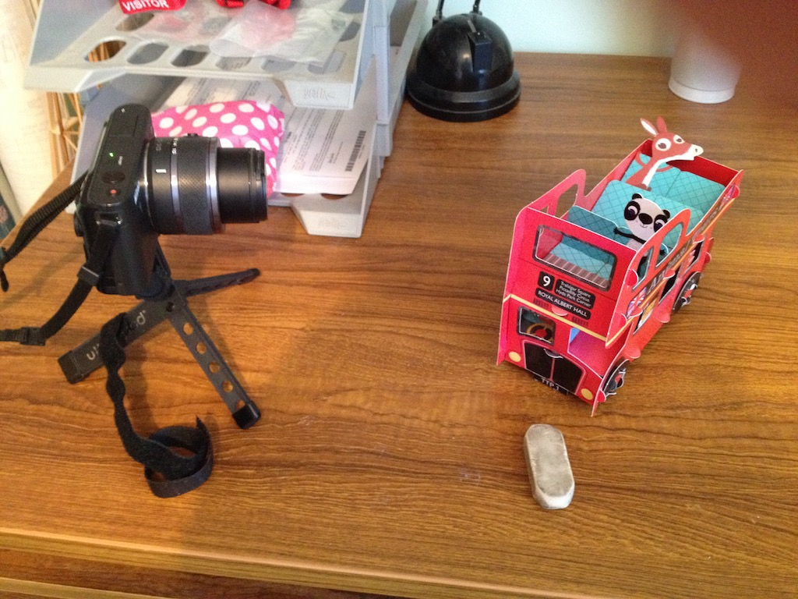

You have probably seen this short stop motion video, so I thought I would tell you how I made it.
To make something like the cardboard bus look as though it is moving you need to take lots of photos, moving the bus a little bit each time. You then play them quickly and 'hey presto', the bus looks at though it is moving.
You can see in the photo that I put my camera on a small tripod so that it would stay still between each photo. I then took a photo, moved the bus a little bit, took another photo and so on. I used the pencil eraser to lift one side of the bus as it went around the bend. All together I took 43 photos. Then I copied the 43 photos to my computer and brought them into iMovie. iMovie displays each photo for four seconds, so I changed the time that each photo is displayed to a quarter of a second. I then added a voiceover (you guessed it was me pretending to be a bus). I copied the first photo on the front and the last on the end and added a title to each.
Finally I saved the video and used an app called Handbrake to make a smaller version so that the video file was much smaller.
I'm sure that you could make a much better stop motion video.